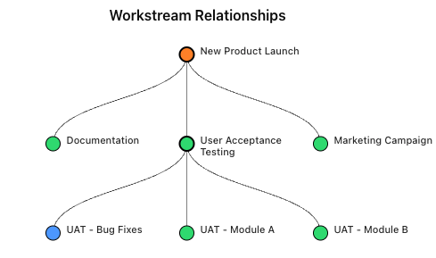

Accurate Context for Smarter Decisions
A powerful framework for organizing your work and delivering insightful decision-making context
The Challenge We Solve
The Challenge: Scattered Context & Ineffective Decisions
- Modern tools streamline tasks, but crucial decision context gets lost.
- Understanding the "why" behind past choices is vital for future success, yet often unclear.
- Decision rationale becomes scattered across disparate tools and chats.
- Key information disappears or relies on incomplete, biased human memory.
- Manually gathering context is inefficient, slow, and prone to errors.
The Solution: Organized Context & Well-Informed Decisions
- Provides a simple, unifying framework to organize fragmented information.
- Keeps everyone aligned by creating a reliable, shared source of truth.
- Encourages clear ownership and transparent rationale for decisions.
- Enables truly informed decision-making with AI-powered insights based on structured data.
Central component of the framework that organizes key project elements: Decisions, Events, and Actions. They connect to other Workstreams to represent relationships.
Tasks and activities performed by users within a Workstream, driving progress towards its goals.
These capture the intent and rationale behind a Workstream’s actions. They are the only elements that change a Workstream’s state, promoting mindful choices.
Represent observations or external factors relevant to a Workstream, recorded for context, awareness, and historical tracking.
Feeding on the captured project context, AI provides summaries, answers questions, and delivers clear, context-aware actionable insights to inform better future decisions.
Features
Quick Discovery & Insights
Discover workstreams though an interactive visual tree which surfaces status.
Effective Timeline Visualization
See a time based log of decisions, actions & events pertaining to the workstream.
AI Powered Insights
Get a personalized AI assistant who will answer your questions based on the data!

Vision
To empower individuals, teams, and organizations across all sectors to operate with integrity and transparency, fostering a world where mindful decisions are made with the most accurate and unbiased insights.